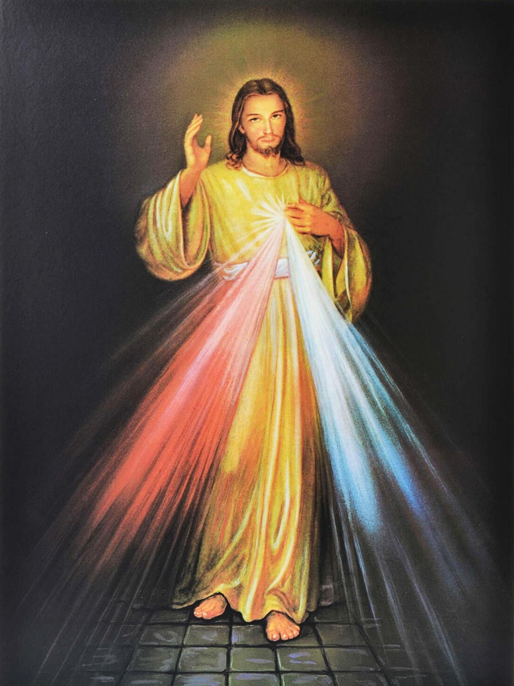
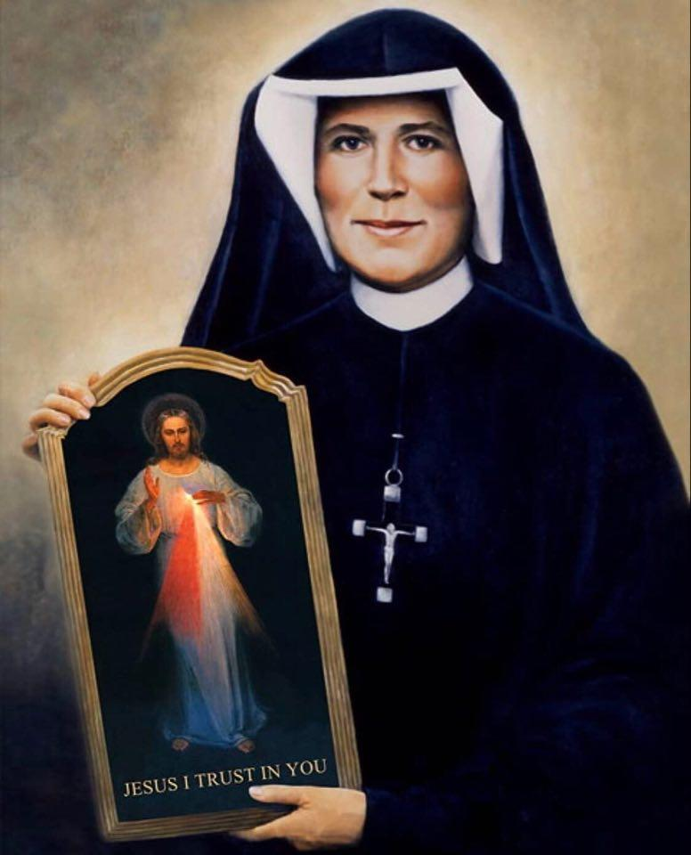
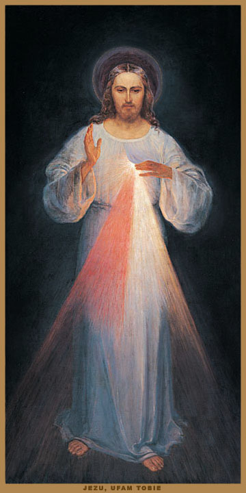

Divina Misericordia

Venerazione della Divina Misericordia
Secondo le rivelazioni di Gesù dal Diario di Santa Maria Faustyna
Mia figlia, proclama al mondo intero la Mia misericordia imperscrutabile. [699]
Dì all''umanità sofferente di avvicinarsi al Mio Cuore misericordioso e Io la riempirò di pace. [1074]
"Nulla è così necessario all''uomo come la misericordia di Dio."
San Papa Giovanni Paolo II.
Sulle tracce della Divina Misericordia
"Attraverso l'amore misericordioso del nostro Dio, l'aurora dall'alto ci visiterà." (Lc 1,78)
Interiorità e spiritualità: favorire e sviluppare la disposizione religiosa della persona umana (...) tutte queste incombenze e frutti benedetti della fede vissuta li troviamo nel Diario di Suor Maria Faustyna:
"Oh, quanto è bello il mondo spirituale! È così reale che in confronto la vita esteriore non è che vuota illusione e impotenza!" [884]
Suor Faustyna ci mostra ciò che troppo spesso è retrocesso in secondo piano, se non nell'oblio, nel corso dello sviluppo negli ultimi decenni – la vita interiore dell'anima con Dio.
"Se solo le anime ascoltassero la Mia voce quando parlo nella profondità dei loro cuori, raggiungerebbero la vetta della santità in breve tempo." [584]
La vera interiorità consiste nell'amore gioioso per Dio e la Sua santa volontà:
"La tristezza non può attecchire in un cuore che ama Dio!" [886]
Sotto il nome di totale libertà, di illimitata emancipazione, i comandamenti di Dio furono chiamati repressivi – sì, Dio stesso fu dichiarato l'avversario della libertà umana. Papa Giovanni Paolo II notò nella sua enciclica Dominum et Vivificantem (n. 38) che Dio fu alla fine dichiarato il nemico della Sua stessa creatura. Suor Faustyna smaschera questa bestemmia proclamando luminosamente:
"L'amore per Dio rende libera l'anima! È come una regina che non conosce la costrizione della schiavitù!" [890]
La preoccupazione di molti credenti che l'interiorità, la vita spirituale, sia una cosa molto difficile, che l'ascesa dell'anima si possa raggiungere solo con azioni straordinarie, era già stata rifiutata come infondata da Santa Teresa del Bambino Gesù con la sua "Piccola Via." Interamente in questa tradizione, il Diario di Suor Faustyna mira a ciò che è decisivo nella vita religiosa: l'amore.
"Gesù, mi hai mostrato in che consiste la grandezza dell'anima: non in grandi azioni, ma solo nel grande amore. L'amore dà valore. Dà a tutte le azioni il loro valore. Così le piccole e quotidiane azioni diventano grandi e significative davanti a Dio attraverso l'amore. L'amore è un mistero che trasforma tutto ciò che tocca in cose belle e gradite a Dio." [889]
Dio è amore. (1 Gv 4,16) E l'amore vuole donarsi. Donarsi è gioia; non poter donarsi è sofferenza. Gesù si dona interamente a Dio; dà la Sua vita per il peccato del mondo. Verso l'essere umano peccatore, l'amore si rivela come misericordia (miseri cor dare = misericordia).
La Divina Misericordia è più grande della miseria umana. Più miserabile è l'uomo peccatore, più la bontà di Dio è incline a mostrargli misericordia. Questa totale prontezza a concedere misericordia a tutti si rivela a Faustyna in modo speciale. La sua vocazione speciale è proclamare la misericordia di Dio. Questo è anche il significato dell'immagine che doveva dipingere: Un'immagine che, anche quando semplicemente contemplata, risveglia fiducia illimitata nella Divina Misericordia. (…)
"Non posso punire nemmeno il più grande peccatore. Se fa appello alla Mia misericordia, lo giustifico nella Mia misericordia imperscrutabile e inscrutabile." [1146]
Secondo la rivelazione di Gesù a Faustyna, basta la consapevolezza della propria miseria e l'apertura alla chiamata del Signore, allora fiumi di misericordia si riverseranno dal Cuore di Gesù sull'umanità. Suor Faustyna diventa così l'araldo della fiducia nell'infinita misericordia. Qualunque cosa possa essere accaduta nella vita di una persona, anche i peccati più terribili – la piena, indisturbata fiducia nell'amore misericordioso di Gesù è sempre la via alla salvezza.
Il nome religioso completo della nostra Serva di Dio è: Suor Maria Faustyna del Santissimo Sacramento. Questo nome apre la vista a un'ulteriore ricchezza di questa vita divina, cioè il significato della Santa Comunione nella vita di Faustyna. Ha lasciato numerose preparazioni per ricevere la Santa Comunione. Sono tesori pieni di incredibile amore e profondità. Anche qui si può riconoscere la provvidenza divina: Nel tempo delle Comunioni di massa, della massiccia ricezione della Comunione, è necessario rendere consapevoli ancora e ancora i tanti comunicandi di chi ricevono, cosa appartiene alla buona preparazione, alla degna e interiore ricezione, e al ringraziamento attento.
"Il momento più solenne della mia vita è sempre il momento in cui ricevo la Santa Comunione … Gli angeli ci invidierebbero due sole cose, se potessero: ricevere la Santa Comunione e soffrire." [1804]
Con l'ultima parola citata, viene caratterizzata un'ulteriore dimensione nella vita di Faustyna. La sofferenza era diventata la sua familiare compagna. Con la Santa Ostia dell'Eucaristia, voleva diventare essa stessa un'ostia, un sacrificio. Da un lato, il suo desiderio era di soffrire con Gesù per la salvezza dei peccatori.
"Il Signore mi concesse durante l'Ora Santa di condividere la Sua Passione. Partecipai all'amarezza che riempì la Sua anima durante la Passione." [872]
Dall'altra parte, voleva fare riparazione a Gesù per le durezze che deve soffrire dagli uomini, per cui Gesù spesso le disse parole come queste alla Santa Comunione:
"Mia figlia, il tuo amore è riparazione per Me al freddo di cuore di molte anime." [1816]
Qui la cooperazione nella salvezza delle anime, sempre nota nella storia della pietà, diventa realtà. (...) Papa Pio XII parlò di questo con serietà nella sua enciclica Mystici Corporis:
"È un mistero veramente maestoso che non si può contemplare mai abbastanza: che la salvezza di molti dipende dalle preghiere e dalle penitenze volontarie dei membri del Corpo mistico di Gesù Cristo, che si assumono a questo scopo." (Dottrina della Salvezza della Chiesa, p. 489, Friburgo Svizzera 1953)
Dopo aver letto il Diario di Suor Faustyna, questo prezioso gioiello della letteratura spirituale, sorge la domanda: Come si può vivere anche un solo momento senza amare Dio?
Dalla prefazione al Diario di Santa Maria Faustyna del Vescovo Josef Stimpfle †, Augusta 6 agosto 1987

Suor Faustyna e la sua missione
"In ogni anima compio l'opera di misericordia. Più grande è il peccatore, maggiore è il suo diritto alla Mia misericordia. Su ogni opera delle Mie mani è fissata la Mia misericordia." [723]
La missione di Suor Faustyna comprende la devozione alla Divina Misericordia in nuove forme. Il fondamento di questa devozione è la fiducia filiale in Dio e l'amore misericordioso per il prossimo, per così dire la chiave della perfezione cristiana.
Suor Faustyna riconobbe questa misericordia imperscrutabile soprattutto attraverso la contemplazione delle opere di Dio. Nella misericordia di Dio vede l'unica ragione per cui Egli chiama le creature dal nulla all'essere. Scrive al riguardo:
"O Dio, per misericordia hai chiamato la razza umana dal nulla all'essere e l'hai abbondantemente dotata di doni naturali e soprannaturali. Non bastava ancora per la Tua bontà. Nella Tua misericordia ci doni la vita eterna. Ci lasci venire alla Tua felicità eterna, partecipare alla Tua vita interiore, e ciò soltanto a causa della Tua misericordia. Ci doni la Tua grazia soltanto perché sei buono e pieno d'amore. Non avevi bisogno di noi per essere felice, ma Tu, Signore, vuoi condividere la Tua stessa felicità con noi." [1743]
Riconosce ancora di più nell'Incarnazione di Dio la Sua misericordia sovrabbondante, che si rivela più perfettamente nell'evento della redenzione sulla Croce.
"Attraverso la Tua misericordia – riconobbe in colloquio con Gesù – discendesti a noi per sollevarci dalla nostra angoscia. (…) Si compie l'imperscrutabile miracolo della Tua misericordia, Signore: il Verbo si fa carne, Dio abita tra noi, il Verbo di Dio – misericordia incarnata. Questa umiliazione di Dio attraverso l'accettazione della natura humana è un'espressione della Sua misericordia, una spesa del Suo amore a cui il cielo si meraviglia." [1745]
Il riconoscimento del mistero della misericordia di Dio nell'opera di creazione, redenzione e beatitudine avvenne nella sua vita attraverso l'uso di mezzi molto semplici, come la lettura spirituale, la meditazione quotidiana, la contemplazione dei misteri del Rosario e della Via Crucis, la profonda esperienza dei santi sacramenti, le feste liturgiche dell'anno della Chiesa, nonché considerando e notando tutto il bene che Dio aveva operato nel mondo e nella sua vita personale.
La chiave del Cuore di Dio
Il fondamento della devozione alla misericordia di Dio è la fiducia. È per così dire la chiave del Cuore di Dio e il vaso per attingere tutte le grazie.
"Dalla Mia misericordia si attingono grazie con un solo vaso, e questo è la fiducia. Più un'anima ha fiducia, più riceve." [1578]
Questa fiducia si dimostra nel fatto che ogni giorno di nuovo dirigiamo la nostra vita secondo la volontà di Dio. Questo avviene innanzitutto attraverso l'adempimento dei Suoi comandamenti e dei nostri doveri di stato, in secondo luogo attraverso il seguire le ispirazioni dello Spirito Santo, e in terzo luogo attraverso l'accettazione grata di tutte le Sue disposizioni e permessi. [Cfr. 444]
"Di', Mia figlia, che sono interamente amore e misericordia. Quando un'anima si avvicina a Me con fiducia, la riempio di una grazia così potente che non può contenerla in sé e la irradierà su altre anime." [1074]
La misericordia verso il prossimo è – accanto alla fiducia – il secondo componente essenziale di questa devozione. Perciò Gesù espresse il desiderio che i Suoi devoti, per amore di Lui, compiano almeno un atto di misericordia verso il prossimo nel corso della giornata.
"Mostrerai misericordia al tuo prossimo sempre e ovunque. Non puoi scusarti, né tirarti fuori, né giustificarti. Ti do tre modi per mostrare misericordia al tuo prossimo: primo – l'azione; secondo – la parola; terzo – la preghiera. In questi tre gradi è contenuta la pienezza della misericordia; è una prova irrefutabile di amore per Me. Così l'anima loda e venera la Mia misericordia." [742]
Spiegò anche che la misericordia verso l'anima è più meritoria e aggiunse che per questo non sono necessari mezzi materiali. La misericordia tutti possono e devono mostrare, soprattutto ogni battezzato, secondo il messaggio del Vangelo.
Così la devozione alla misericordia di Dio non ha esclusivamente il carattere di una preghiera, ma è una manifestazione profondamente vissuta della vita cristiana.

Questa immagine di grazia si trova nel Santuario della Divina Misericordia a Vilnius (Lituania) dal settembre 2005. Eugeniusz Kazimirowski fu il primo pittore incaricato di dipingere l'immagine del Gesù Misericordioso secondo le descrizioni di Suor Faustyna. Quando la vide per la prima volta nel 1934, pianse amaramente perché non riuscì a raffigurare Gesù tanto bello quanto aveva potuto vederLo. Tuttavia Gesù la consolò, parlandole: "Non nella bellezza dei colori o del tratto sta la grandezza di questa immagine, ma nella Mia grazia." [313]
L''immagine del Gesù Misericordioso
"O eterno Amore, comandi che la Tua santa immagine sia dipinta e ci riveli l'imperscrutabile sorgente di misericordia. Benedici coloro che si avvicinano ai Tuoi raggi, e ogni anima nera si trasforma in neve." [1]
L'incontro di Suor Faustyna con il Gesù Misericordioso il 22 febbraio 1931 sta all'inizio della venerazione di quell'immagine unica attraverso cui molte persone ricevono fiumi di grazie. Scrive:
"La sera, quando ero nella mia cella, vidi Gesù, il Signore, in una veste bianca. Una mano era alzata in benedizione, l'altra toccava la veste al petto. Dall'apertura della veste (…) uscivano due grandi raggi, uno rosso e uno pallido. (…) La mia anima fu permeata di paura, ma anche di grande gioia. Dopo un po' Gesù mi disse: 'Dipingi un'immagine secondo ciò che vedi, con l'iscrizione: Jezu Ufam Tobie (Gesù, mi fido di Te)! Desidero che questa immagine sia venerata, prima nella vostra cappella, poi in tutto il mondo.'" [47]
Il contenuto dell'immagine è strettamente connesso con la liturgia della seconda domenica di Pasqua (Festa della Divina Misericordia). Il Vangelo del giorno della Chiesa riguarda l'apparizione del Risorto nella Stanza Alta e l'istituzione del Sacramento della Penitenza (cfr. Gv 20,19-23). I raggi di Sangue e Acqua che fluiscono dal cuore trafitto così come le ferite su mani e piedi richiamano gli eventi del Venerdì Santo (cfr. Gv 19,16-37).
"I raggi di misericordia Mi consumano, voglio riversarli sulle anime degli uomini." [50]
Caratteristici dell'immagine del Gesù Misericordioso sono i due raggi che il Signore stesso spiegò:
"Il raggio pallido significa l'acqua, che giustifica le anime; il raggio rosso significa il Sangue, che è la vita delle anime. (...) Questi due raggi uscirono dalle profondità della Mia misericordia quando il Mio Cuore morente sulla Croce fu aperto con la lancia. Beati coloro che vivono alla loro ombra." [299]
I Sacramenti del Battesimo e della Penitenza purificano l'anima, e nel Sacramento dell'Eucaristia essa riceve sempre di nuovo il suo nutrimento.
Così l'immagine parla da un lato della grande misericordia di Dio, che ci fu rivelata nel mistero pasquale di Cristo, e dall'altro lato ci ricorda la pratica cristiana della fiducia così come l'amore attivo per il prossimo. Le parole poste sull'immagine indicano l'atteggiamento di fiducia: Gesù, mi fido di Te!
"L'immagine," disse Gesù, "ricorderà le esigenze della Mia misericordia, poiché anche la fede più forte non vale nulla senza le opere." [742]
Alla devozione all'immagine intesa in questo modo, il Signore ha promesso la salvezza eterna:
"Prometto che l'anima che venera questa immagine non perirà." [48]
Il Signore promise anche grande progresso sul cammino della perfezione cristiana, la grazia di una morte felice, così come tutte le altre grazie e benefici temporali per cui le persone Lo pregheranno con fiducia:
"Attraverso l'immagine concederò molte grazie alle anime; quindi ogni anima dovrebbe avervi accesso." [570]
Nel 1943, il pittore Adolf Hyla, in ringraziamento per il suo salvataggio dalla guerra, fece anche un dipinto del Gesù Misericordioso e lo donò come offerta votiva per la cappella delle Suore della Congregazione della Madonna della Misericordia a Cracovia. Ancora oggi innumerevoli persone vengono a questo santuario per venerare il Gesù Misericordioso e chiedere grazie. Copie di questa grande immagine di grazia sono distribuite in tutto il mondo.
La Festa della Divina Misericordia
"Desidero che la prima domenica dopo Pasqua diventi la Festa della Misericordia." [299]
"In questo giorno i sacerdoti proclameranno alle anime la Mia grande e imperscrutabile misericordia." [570]
Gesù espresse questo desiderio per la prima volta nel 1931 a Płock, quando comunicò la Sua volontà riguardo alla creazione dell''immagine del Gesù Misericordioso. In i seguenti anni Gesù tornò a questo desiderio 14 volte, assegnando il posto di questa festa nel calendario liturgico, descrivendo la ragione e il fine della sua istituzione, nonché il modo della sua preparazione e celebrazione.
La scelta della prima domenica dopo Pasqua, che conclude l''ottava della Risurrezione del Signore, indica lo stretto legame del mistero pasquale con la Festa della Divina Misericordia. La sofferenza, la morte e la risurrezione di Cristo sono la sorgente e il culmine della rivelazione dell''amore misericordioso di Dio.
"La Festa della Divina Misericordia fu introdotta per tutta la Chiesa da Papa Giovanni Paolo II il 30 aprile 2000."
L''opera di redenzione si mostra nella sua piena abbondanza nei santi sacramenti, di cui parla la liturgia di questa festa. I Sacramenti del Battesimo, della Penitenza e dell''Eucaristia sono quindi sorgenti inesauribili della misericordia di Dio, alle quali la Chiesa conduce tutte le generazioni su tutta la terra.
Perciò, la Domenica della Misericordia non dovrebbe essere solo il giorno della speciale venerazione di Dio in questo mistero, ma anche il giorno di grazia per tutte le persone, soprattutto per i peccatori.
"Desidero che la Festa della Misericordia sia un rifugio e un riparo per tutte le anime, soprattutto per i poveri peccatori. In questo giorno si apre l''interiorità della Mia misericordia; riverso tutto un mare di grazie sulle anime che si avvicinano alla sorgente della Mia misericordia. L''anima che va a confessione e riceve la Santa Comunione ottiene la completa remissione della colpa e della pena; in questo giorno tutte le cateratte di Dio sono aperte, attraverso cui scorrono le grazie. Nessuna anima dovrebbe temere di avvicinarsi a Me, anche se i suoi peccati fossero rossi come scarlatto." [699]
La preparazione alla Festa della Divina Misericordia dovrebbe essere una novena basata sulla preghiera della Coroncina della Divina Misericordia per nove giorni.
"In questa novena," disse il Signore, "concederò tutte le grazie alle anime." [796]
La Coroncina della Divina Misericordia
"Attraverso la preghiera della Coroncina della Divina Misericordia avvicini l'umanità a Me." [929]
"Mi compiaccio di concedere loro attraverso questa preghiera tutto ciò che Mi chiedono." [1541]
Gesù dettò questa preghiera a Suor Faustyna il 13-14 settembre 1935. [474–476] In tutto Gesù ne parlò 14 volte, spiegando il fine e le promesse connesse con questa preghiera. In questa preghiera offriamo a Dio Padre: il Corpo e il Sangue, l'Anima e la Divinità del Suo amato Figlio in riparazione per i nostri peccati e quelli del mondo intero. Ci uniamo al sacrificio di Gesù sulla Croce, che compì per la redenzione del mondo; facciamo appello all'amore con cui Dio Padre ama Suo Figlio e in Lui tutti gli uomini. Quando teniamo presente in tutto ciò che chiediamo la volontà di Dio e la Sua gloria, riceviamo la promessa di Gesù:
"Attraverso la preghiera chiedete tutto, se ciò che chiedete è in accordo con la Mia volontà." [1731]
Secondo la promessa di Gesù, specialmente i peccatori e i morenti dovrebbero ricevere grazie speciali.
"I sacerdoti la offriranno ai peccatori come ultima ancora di salvezza. Anche se fosse il peccatore più indurito – se prega questa coroncina solo una volta, gli sarà concessa la grazia della Mia infinita misericordia." [687]
Quando questa Coroncina della Misericordia è pregata per i morenti, Gesù starà tra Suo Padre e il morente non come Giudice giusto, ma come Redentore misericordioso. [1541]
Istruzioni per pregare la Coroncina della Divina Misericordia [Clicca qui]
La Novena della Divina Misericordia
L''Ora della Misericordia
"In quest''ora venne la grazia per tutto il mondo. La misericordia conquistò la giustizia." [1572]
Nell''ottobre 1937 Gesù raccomandò di commemorare la Sua ora di morte, che Egli stesso chiamò "l''ora di grande misericordia per il mondo." [1320] Nel febbraio 1938 il Signore ripeté il Suo desiderio, descrivendo il modo di pregare nell''Ora della Misericordia e la promessa ad essa collegata.
Gesù desidera commemorare in quest''ora della Sua amara sofferenza, lodare e glorificare la misericordia di Dio, e chiedere attraverso i meriti delle Sue amare sofferenze le grazie necessarie per il mondo, soprattutto per i peccatori:
"Ti ricordo (...) che ogni volta che senti l''orologio battere la terza ora, ti immergerai interamente nella Mia misericordia, la glorificherai e la loderai. Invoca la sua onnipotenza per tutto il mondo, soprattutto per i poveri peccatori, poiché ora è spalancata per ogni anima." [1572]
Preghiera nell''Ora della Morte del Signore (15:00)
Gesù Misericordioso, in grato ricordo della Tua amara morte sulla Croce Ti adoro nel più profondo rispetto e Ti lodo per la grazia inestimabile della redenzione. Umilmente Ti chiedo, guarda misericordiosamente su tutta l''umanità e mostra la Tua misericordia imperscrutabile soprattutto ai poveri peccatori e ai morenti. Amen.
Preghiera per la conversione di un''anima
"Se preghi la seguente preghiera per un peccatore con cuore contrito e nella fede, gli concederò la grazia della conversione. La preghiera è:
O Sangue e Acqua, che sgorgaste dal Cuore di Gesù come fontana di misericordia per noi – mi fido di Te. [186]
Madonna della Misericordia
"Ho dato al mondo il Redentor, e tu dirai al mondo della Sua grande misericordia e lo preparerai al Suo ritorno." [635]
Suor Faustyna riferisce nel suo diario come le fu permesso più volte di vedere la Madre di Dio come Mediatrice tra cielo e terra:
"… vidi tra cielo e terra la Madre di Dio in una veste luminosa. Stava pregando, le mani incrociate sul petto e guardando verso il cielo. Dal suo cuore uscivano raggi di fuoco, alcuni andavano al cielo, altri coprivano la nostra terra." [33]
Il 5 agosto 1935, nella Festa della Madonna della Misericordia, Suor Faustyna vide di nuovo Maria in bellezza ineffabile, e questa volta Maria le parlò:
"Sono la tua Madre dalla misericordia imperscrutabile di Dio. L''anima che fedelmente adempie la volontà di Dio mi è più cara." [449]
Con queste parole Maria ci ricorda l''ora di grande misericordia, in cui Gesù, morendo sulla Croce, ci diede Sua Madre per così dire come porta di misericordia.
Da quel momento, secondo il piano divino, Maria è la grande medianeira delle grazie dei meriti del Redentore (Cf. II Concilio Vaticano, Lumen Gentium, n.º 62). Maria carica le nostre preghiere e sacrifici fino al Cuore di Dio. Perciò lei sempre ci invita di nuovo a consacrarci, le nostre famiglie e rappresentativamente tutta l''umanità al suo cuore materno. Attraverso questa consacrazione a Maria possiamo aiutare nel trionfo del suo Cuore Immacolato, che lei già annunciò nel 1917 a Fatima. (Possa il suo Cuore Immacolato trionfare!)
Consacrazione al Cuore Immacolato di Maria
Santissima Vergine Maria!
Madre di Dio e mia Madre! Al Tuo Cuore Immacolato mi consacro con tutto ciò che sono e ho. Prendimi sotto la Tua protezione materna! Preservami da tutti i pericoli. Aiutami a superare le tentazioni che mi conducono al male, affinché possa preservare la purezza del mio corpo e della mia anima. Il Tuo Cuore Immacolato sia il mio rifugio e la via che mi conduce a Dio.
Ottienimi la grazia di pregare e sacrificare spesso per amore di Gesù per la conversione dei peccatori e in riparazione dei peccati commessi contro il Tuo Cuore Immacolato. In unione con Te e il Cuore del Tuo Figlio divino desidero vivere in totale consacrazione alla Santissima Trinità, in cui credo, che adoro, in cui spero e che amo. Amen. (Suor M. Lucia)
La Misericordia e la Giustizia di Dio
"Prima di venire come giusto Giudice, apro largamente la porta della Mia misericordia. Chi non vuole entrare per la porta della Mia misericordia deve passare per la porta della Mia giustizia." [1146]
Suor Faustyna riconobbe il mistero della misericordia di Dio anche nel destino dell'uomo per la beatitudine eterna. Dio le concesse nella Sua bontà e misericordia la grazia di contemplare le bellezze e la felicità della gloria celeste, che è preparata per coloro che Lo amano e confidano in Lui.
Un avvenimento ulteriore che Suor Faustyna racconta nel suo diario è il soggiorno nel luogo di purificazione (purgatorio), dove vide le anime sofferenti che soddisfano la giustizia di Dio per i loro peccati, il che è un dono ulteriore della misericordia di Dio. Queste anime sono piene di speranza, poiché sanno che un giorno contempleranno Dio.
Ben diverso è il luogo del tormento eterno, l'inferno. Suor Faustyna fu condotta per ordine di Dio mediante un angelo nell'abisso dell'inferno, per dare testimonianza all'umanità che esso esiste e popolato di anime condannate che sopportano terribili tormenti che durano eternamente.
Vislumbre del Cielo
"Oggi sono stata in spirito in cielo e ho contemplato le insondabili bellezze e la felicità che ci aspetta dopo la morte. Ho visto come tutte le creature incessantemente rendono onore e gloria a Dio. Ho visto quanto grande è la felicità in Dio che fluisce su tutte le creature, le rende felici, e come tutta la gloria e l'onore ritornano da questa felicità alla fonte. Penetrano nelle profondità di Dio, contemplando la vita interiore di Dio – del Padre, del Figlio e dello Spirito Santo – che mai comprenderanno o sonderanno. Questa fonte di felicità è immutabile nella sua essenza, però sempre nuova, gorgogliando di beatitudine per tutte le creature. Ora posso comprendere il santo Paolo, che disse: 'Né occhio vide, né orecchio udì, né mai entrò nel cuore dell'uomo ciò che Dio ha preparato per coloro che Lo amano.' (1 Cor 2,9)
E Dio mi ha fatto comprendere qualcosa che ha valore infinito ai Suoi occhi – è l'amore di Dio, amore, amore, e di nuovo amore; con un solo atto di puro amore di Dio nulla può essere paragonato. (…) Oh mio Dio, quanto mi spiace per coloro che non credono nella vita eterna; prego tanto per loro affinché anche loro siano toccati da un raggio di misericordia e Dio li stringa al Suo cuore paterno." [777–780]
Nel Purgatorio
All'inizio della sua vita religiosa, durante una breve infermità, Suor Faustyna chiese a Gesù per chi ancora dovesse pregare:
"Gesù mi rispose che nel prossimo giorno mi avrebbe fatto sapere per chi dovessi pregare. Contemplai il mio Angelo Custode, che mi ordinò di seguirlo. Di colpo mi trovai in un luogo nebbioso pieno di fuoco, e in esso molte anime sofferenti. Queste anime pregano con grande fervore, però senza effetto per se stesse; solamente noi possiamo aiutarle. Le fiamme che ardevano al loro intorno non mi toccavano. Il mio Angelo Custode non mi lasciò per un momento. Chiesi alle anime quale fosse il loro maggiore sofferenza. Mi risposero unanimemente che la loro maggiore sofferenza era l'anelito per Dio. Vidi la Madre di Dio visitare le anime nel purgatorio. Le anime chiamano Maria 'Stella del Mare.' Lei porta loro sollievo. Volevo parlare più con loro, ma il mio Angelo Custode mi diede il segnale per andare. (…) Udii una voce interiore che disse:
'La Mia misericordia non desidera questo, ma la giustizia lo esige.'
Da quell'epoca ho coltivato una relazione più vicina con le anime sofferenti." [20]
Discesa all'Inferno
"Oggi sono stata condotta da un angelo nell'abisso dell'inferno. È un luogo di grande tormento; la sua estensione è terribilmente grande. I tipi di tormento che ho visto sono i seguenti: Il primo tormento che costituisce l'inferno è la perdita di Dio; il secondo – l'incessante rimorso della coscienza; il terzo – che questo destino mai cambierà nuovamente. Il quarto tormento – il fuoco che penetra l'anima senza distruggerla; è un tormento terribile; è un fuoco puramente spirituale acceso dall'ira di Dio. Il quinto tormento – è l'oscurità costante e un odore terribilmente soffocante. Sebbene sia oscuro, i demoni e le anime condannate vedono gli uni gli altri; vedono tutta la malvagità degli altri e anche la propria. Il sesto tormento – è l'incessante compagnia di Satana. Il settimo tormento – è terribile disperazione, odio di Dio, bestemmie, maledizioni e rimproveri. Questi sono tormenti che tutti i condannati soffrono in comune, ma ciò non è la fine. Vi sono ancora tormenti speciali per le anime, vale a dire, tormenti dei sensi. Con quello con cui ogni anima ha peccato, con quello è tormentata in modo terribile e indescrivibile. Vi sono terribili caverne e abissi di tormento, dove un tormento differisce dall'altro. Davanti a questo terribile tormento sarei morta se l'onnipotenza di Dio non mi avesse preservata. Il peccatore deve sapere che sarà tormentato per tutta l'eternità con l'organo del senso con il quale ha peccato. Scrivo di questo per ordine di Dio, affinché nessuna anima possa scusarsi dicendo che l'inferno non esiste, o che nessuno vi è stato e non sappiamo come sia."
"Io, Suor Faustyna, sono stata per ordine di Dio nell'abisso dell'inferno per riferire e dare testimonianza alle anime che l'inferno esiste. Ora non posso parlarne, poiché ho ordine di Dio di lasciarlo per iscritto. I demoni avevano grande odio per me, ma per ordine di Dio hanno dovuto obbedirmi. Ciò che ho scritto è un'ombra magra delle cose che ho visto. Una cosa ho potuto osservare: vi sono principalmente anime che non avevano creduto nell'inferno. Quando sono tornata in me, non ho potuto riprendermi dall'orrore di quanto le anime soffrono lì. Perciò prego ancora più fervorosamente per la conversione dei peccatori. Senza sosta imploro la misericordia di Dio per loro. Oh mio Gesù, preferirei soffrire tormenti fino alla fine del mondo piuttosto che offenderVi con il più lieve peccato." [741]
Questa testimonianza personale della Santa Suor Faustyna merita ancora più attenzione poiché è in accordo con gli insegnamenti della Chiesa:
"L'insegnamento della Chiesa afferma che l'inferno esiste e che dura eternamente. Morire in peccato mortale senza essersi pentiti di esso e senza accettare l'amore misericordioso di Dio significa rimanere per sempre separati da Lui per propria libera scelta." (CCC 1035, 1033)
Preghiere alla Divina Misericordia
"L''anima più felice è quella che si affida alla Mia misericordia, poiché Io stesso mi prendo cura di essa." [1273]
Preghiera di Suor Faustyna [163]
Tante volte quanto il mio petto respira, tante volte quanto il mio cuore batte, tante volte quanto il sangue pulsa nel mio corpo, tante migliaia di volte loderò la Vostra misericordia, Oh Santissima Trinità. (…) Che questo maggiore attributo di Dio, la Sua insondabile misericordia, raggiunga i miei prossimi attraverso il mio cuore e la mia anima.
Aiutatemi, Signore, affinché i miei occhi guardino con misericordia, affinché mai sospetti e giudichi dall''apparenza esteriore, ma percepisca ciò che è bello nelle anime dei miei prossimi e venga in loro aiuto.
Aiutatemi affinché il mio udito diventi misericordioso, affinché mi inclini alle necessità dei miei prossimi, affinché le mie orecchie non rimangano indifferenti al sofferenza e lamento dei miei prossimi.
Aiutatemi, Signore, affinché la mia lingua diventi misericordiosa, affinché mai parli sprezzantemente dei miei prossimi, ma abbia una parola di conforto e perdono per tutti.
Aiutatemi, Signore, affinché le mie mani siano misericordiose e piene di buone opere, affinché faccia solo il bene al mio prossimo e prenda su di me lavoro più difficile, più laborioso.
Aiutatemi affinché i miei piedi siano misericordiosi, affinché sempre si affrettino ad ausiliare il mio prossimo e dominino la mia propria stanchezza e fatica. Il mio vero riposo è nel servire il mio prossimo.
Aiutatemi, Signore, affinché il mio cuore sia misericordioso, affinché senta tutte le sofferenze dei miei prossimi, affinché non rifiuti il mio cuore a nessuno, mantenga rapporti sinceri anche con coloro la cui bontà so che sarà abusata; io stessa mi chiuderò nel più misericordioso Cuore di Gesù. Silenzierò sui miei propri sofferenze. Vostra misericordia, oh mio Signore, riposerà in me.
Oh mio Gesù, trasformatemi in Voi stessi, poiché potete fare tutte le cose.
Litania della Divina Misericordia [949]
Misericordia di Dio,
scaturita dal seno del Padre,
Confio in Voi!
Misericordia di Dio,
maggiore attributo di Dio,
Confio in Voi!
Misericordia di Dio,
mistero insondabile di Dio,
Confio in Voi!
Misericordia di Dio,
fonte che scaturisce dal mistero della Santissima Trinità,
Confio in Voi!
Misericordia di Dio,
non sondata né dall''intelletto degli uomini né da quello degli angeli,
Confio in Voi!
Misericordia di Dio,
dalla quale fluiscono tutta la vita e la felicità,
Confio in Voi!
Misericordia di Dio,
elevata sopra il cielo,
Confio in Voi!
Misericordia di Dio,
fonte di meraviglie e misteri,
Confio in Voi!
Misericordia di Dio,
che abbraccia tutto l''universo,
Confio in Voi!
Misericordia di Dio,
venuta nel mondo nella Persona del Verbo Incarnato,
Confio in Voi!
Misericordia di Dio,
che fluisce dalla ferita aperta del Cuore di Gesù,
Confio in Voi!
Misericordia di Dio,
contenuta nel Cuore di Gesù per noi, specialmente per i peccatori,
Confio in Voi!
Misericordia di Dio,
insondabile nell''istituzione della Santissima Eucaristia,
Confio in Voi!
Misericordia di Dio,
nella fondazione della santa Chiesa,
Confio in Voi!
Misericordia di Dio,
nel Sacramento del santo Battesimo,
Confio in Voi!
Misericordia di Dio,
nella nostra giustificazione attraverso Gesù Cristo,
Confio in Voi!
Misericordia di Dio,
accompagnandoci attraverso tutta la nostra vita,
Confio in Voi!
Misericordia di Dio,
abbracciandoci specialmente nell''ora della nostra morte,
Confio in Voi!
Misericordia di Dio,
concedendoci la vita eterna,
Confio in Voi!
Misericordia di Dio,
al nostro fianco in ogni momento della nostra vita,
Confio in Voi!
Misericordia di Dio,
proteggendoci dal fuoco dell''inferno,
Confio in Voi!
Misericordia di Dio,
nella conversione dei peccatori induriti,
Confio in Voi!
Misericordia di Dio,
meraviglia degli angeli e insondabile per i santi,
Confio in Voi!
Misericordia di Dio,
insondabile in tutti i misteri di Dio,
Confio in Voi!
Misericordia di Dio,
sollevandoci da ogni miseria,
Confio in Voi!
Misericordia di Dio,
fonte della nostra felicità e gioia,
Confio in Voi!
Misericordia di Dio,
chiamandoci dal nulla alla vita,
Confio in Voi!
Misericordia di Dio,
abbracciando tutte le opere delle Sue mani,
Confio in Voi!
Misericordia di Dio,
coronando tutto ciò che è e sarà,
Confio in Voi!
Misericordia di Dio,
in cui tutti siamo immersi,
Confio in Voi!
Misericordia di Dio,
dolce consolazione dei cuori afflitti,
Confio in Voi!
Misericordia di Dio,
unica speranza delle anime disperate,
Confio in Voi!
Misericordia di Dio,
riposo dei cuori, pace nel mezzo del terrore,
Confio in Voi!
Misericordia di Dio,
delizia ed estasi delle anime sante,
Confio in Voi!
Misericordia di Dio,
risvegliando fiducia nonostante la disperazione,
Confio in Voi!
Oh Dio Eterno, la cui misericordia è insondabile e il cui tesoro di compassione è inesauribile, guardate graziosamente su di noi e aumentate la Vostra misericordia in noi, affinché non disperiamo né ci scoraggiamo in momenti difficili, ma con grande fiducia ci consegniamo alla Vostra santa volontà, che è amore e misericordia in se stessi. Amen.
Consacrazione a Gesù Misericordioso
Gesù Misericordioso, Vostra bontà è infinita, e i tesori delle Vostre grazie sono inesauribili. Confido senza limiti nella Vostra misericordia, che supera tutte le Vostre opere.
Consacro me interamente a Voi, per vivere nei raggi della Vostra grazia e amore che uscirono dal Vostro Cuore nella Croce.
Voglio diffondere la Vostra misericordia e specialmente recitare il Vostro Terzo (Coroncina), implorare la Vostra misericordia per noi, per la conversione dei peccatori, per tutto il mondo e per le Sante Anime del purgatorio.
Voi, però, mi proteggerete come Vostra proprietà e Vostro onore, poiché temo tutto dalla mia debolezza e spero tutto dalla Vostra misericordia.
Che tutta l''umanità riconosca l''insondabile profondità della Vostra misericordia, collochi tutta la sua speranza in essa e la lodi per tutta l''eternità. Amén.
Gesù, confio in Voi, poiché siete mia fiducia!
Via Crucis sulla Vita Interiore
(Cfr. Dio, ricco di misericordia)
"Concedo le più grandi grazie alle anime che contemplano devotamente il Mio patire." [737]
Preghiera d'ingresso
Signore misericordioso, mio Maestro, Ti seguirò fedelmente, Ti imiterò nella mia vita in modi sempre più perfetti. Per questo Ti chiedo di concedermi, mediante la contemplazione del Tuo patire, la grazia di comprendere sempre meglio i misteri della vita spirituale.
Maria, Madre di misericordia, guidami sui sentieri dell'amaro patire del Tuo Figlio e ottienimi le grazie necessarie per una fruttuosa esperienza di questa Via Crucis. La offro specialmente per la santificazione dei sacerdoti e dei religiosi e per tutti coloro che aspirano alla vera interiorità e perfezione.
Preghiera prima di ogni stazione
Ti adoriamo, Signore Gesù Cristo, e Ti lodiamo.
Perché con la Tua santa Croce hai redento il mondo.
I. Stazione
Gesù è condannato a morte
I sommi sacerdoti e tutto il sinedrio cercavano falsa testimonianza contro Gesù per poterlo condannare a morte.
(Mt 26,59-60)
Gesù:
"Non meravigliarti se talvolta sei ingiustamente esposta al sospetto. Per amore di te ho bevuto per primo il calice dei patimenti innocenti." [289]
"Quando stetti davanti a Erode, chiesi per te la grazia di elevarti sopra il disprezzo degli uomini e di seguire fedelmente i Miei sentieri." [1164]
Santa Faustina:
"Siamo abituati a reagire al parlare e pensiamo di dover sempre rispondere subito, senza badare se è volontà di Dio che parliamo. Un'anima silenziosa è forte; tutte le avversità non le nuocciono quando persevera nel silenzio. Un'anima silenziosa è capace di unirsi a Dio nel modo più intimo." [477]
Gesù misericordioso, aiutami ad accettare ogni giudizio umano e non permettere che io condanni mai Te nel mio prossimo.
II. Stazione
Gesù prende la Croce su di Sé
"Portò la sua croce e uscì verso il luogo detto del Cranio, che in ebraico si chiama Golgota."
(Gv 19,17)
Gesù:
"Non aver paura della sofferenza, Io sono con te." [151]
"Più ti avvicini all'amore della sofferenza, tanto più puro sarà il tuo amore per Me." [279]
Santa Faustina:
"Gesù, Ti ringrazio per le piccole croci quotidiane, per gli ostacoli ai miei propositi, per il peso della vita comunitaria, per la falsa interpretazione delle intenzioni, per le umiliazioni da parte altrui, per il trattamento rude, per le accuse infondate, per la debole salute e lo sfinimento, per la rinuncia alla mia volontà, per l'annientamento del mio io, per la mancanza di riconoscimento in tutto, per la frustrazione di tutti i progetti." [343]
Gesù misericordioso, insegnami a valorizzare il peso della vita, la malattia e ogni sofferenza e a portare questa croce quotidiana con amore.
III. Stazione
Gesù cade la prima volta sotto la Croce
"Su di Lui era il castigo che ci risana, per le Sue piaghe siamo stati guariti."
(Is 53,5)
Gesù:
"Le colpe involontarie delle anime non Mi trattengono nel Mio amore per loro (…) né Mi impediscono di unirmi a loro; ma anche le colpe più piccole, commesse volontariamente, trattengono le Mie grazie; tali anime non posso colmare con i Miei doni." [1641]
Santa Faustina:
"O mio Gesù, quanto tendo al male. Questo mi obbliga a una costante vigilanza su me stessa. Ma non mi lascio scoraggiare da nulla. Confido nella grazia di Dio, abbondantemente presente nella massima miseria." [606]
Signore misericordioso, preservami da ogni, anche la più piccola, infedeltà volontaria e consapevole.
IV. Stazione
Gesù incontra sua Madre
"Anche a te una spada trafiggerà l'anima."
(Lc 2,35)
Gesù:
"Anche se tutte le opere che scaturiscono dalla Mia volontà sono esposte a grandi sofferenze, considera se qualcuna di esse fu esposta a sofferenza maggiore della Mia opera diretta, l'opera della redenzione. Non dovresti affliggerti troppo per le avversità." [1643]
Santa Faustina:
"Udii la voce della Santissima Madre: 'Sappi, figlia mia, sebbene sia stata elevata alla dignità di Madre di Dio, sette spade di dolore hanno trafitto il mio cuore. Non fare nulla per difenderti, soffri tutto con umiltà, Dio stesso ti difenderà.'" [786]
Maria, Madre Addolorata, sii sempre con me, specialmente nella sofferenza, come fosti presente nella Via Crucis di Tuo Figlio.
V. Stazione
Simone di Cirene aiuta Gesù a portare la Croce
"Mentre Lo conducevano via, fermarono un certo Simone di Cirene (…) Gli imposero la croce da portare dietro a Gesù."
(Lc 23,26)
Gesù:
"Permetto le difficoltà perché i tuoi meriti siano moltiplicati. Non ricompenso il buon esito ma la pazienza e la fatica intraprese per Me." [86]
Santa Faustina:
"O mio Gesù, non ricompensi il buon esito di un'opera ma la volontà sincera e gli sforzi. Perciò sono del tutto serena, anche se tutti i miei sforzi e le mie fatiche restano vani o non dovessero mai realizzarsi. Se faccio tutto ciò che è in mio potere, il resto non mi appartiene più." [952]
Gesù, mio Signore, ogni pensiero, ogni parola e ogni azione siano compiuti soltanto per amore di Te. Purifica le mie intenzioni.
VI. Stazione
Veronica offre a Gesù il panno
"Molti si stupirono di Lui, tanto era sfigurato il suo aspetto, non più come un uomo, la sua figura non era più quella di un uomo."
(Is 52,14)
Gesù:
"Sappi che quando fai del bene a un'anima, Lo accetto come se lo avessi fatto per Me stesso." [1768]
Santa Faustina:
"Da Gesù imparo a essere buona, da Colui che è la bontà stessa, perché possa essere chiamata figlia del Padre celeste." [669]
"Il grande amore può trasformare le piccole cose in grandi, e solo l'amore dà valore alle nostre azioni." [303]
Signore Gesù, mio Maestro, fa che i miei occhi, le mie mani, la mia bocca e il mio cuore siano misericordiosi. Trasformami in misericordia.
VII. Stazione
Gesù cade la seconda volta sotto la Croce
"Egli si è caricato delle nostre malattie e si è addossato i nostri dolori."
(Is 53,4)
Gesù:
"La causa delle tue sconfitte è che conti troppo su te stessa e troppo poco su Me." [1488]
"Sappi che da te stessa non puoi nulla." [639]
"Senza il Mio aiuto speciale non sei nemmeno capace di ricevere le Mie grazie." [738]
Santa Faustina:
"Gesù, non lasciarmi sola. (…) Tu, Signore, sai quanto sono debole. Sono l'abisso della miseria, sono pura nullità; è dunque sorprendente se Tu mi lasci sola, che io cada." [1489]
"Dovresti quindi, Gesù, stare costantemente con me, come una madre con il suo bambino debole, anzi di più." [264]
La Tua grazia mi assista, Signore, perché non cada continuamente negli stessi errori. E quando cado, aiutami a rialzarmi e lodare la Tua misericordia.
VIII. Stazione
Gesù ammonisce le donne di Gerusalemme
"Lo seguiva una grande folla di popolo e di donne che si battevano il petto e facevano lamenti su di Lui."
(Lc 23,27)
Gesù:
"O quanto Mi è caro il credo vivo." [1421]
"Desidererei che nel tempo presente ci fosse più fede tra voi." [353]
Santa Faustina:
"Ti prego con tutto il cuore, Signore, di rafforzare la mia fede, perché nel grigio quotidiano non mi lasci guidare dagli umori umani ma dallo Spirito. O come tutto attira l'uomo alla terra, ma il credo vivo mantiene l'anima nelle sfere più alte e assegna all'amor proprio il suo posto dovuto, l'ultimo." [210]
Signore misericordioso, Ti ringrazio per il santo Battesimo e per la grazia della fede. Continuamente invoco: Signore, credo, aumenta la mia fede!
IX. Stazione
Gesù cade la terza volta sotto la Croce
"Maltrattato e umiliato, non aprì bocca."
(Is 53,7)
Gesù:
"Sappi che il più grande ostacolo alla santità è la svogliatezza e l'ansia infondata. Ti tolgono la possibilità di esercitare la virtù. (…) Sono sempre pronto a perdonarti. Ogni volta che Me lo chiedi, lodi la Mia misericordia." [1488]
Santa Faustina:
"Mio Gesù, nonostante le Tue grazie sento e vedo tutta la mia miseria. Inizio e termino il giorno in lotta. Appena ho superato una difficoltà, dieci nuove ne sorgono al suo posto da combattere. Ma non me ne affliggo, perché so che ora è il tempo del combattimento e non della pace." [606]
Signore misericordioso, Ti dono ciò che è mia sola proprietà, cioè il peccato e la debolezza umana. Ti supplico che la mia miseria sia sommersa nella Tua inesauribile misericordia.
X. Stazione
Gesù è spogliato delle Sue vesti
"Si compisse la Scrittura: 'Si son divise le Mie vesti fra loro e sulla Mia tunica han tirato a sorte.'"
(Gv 19,24)
Santa Faustina:
"Gesù improvvisamente mi stette davanti, spogliato delle Sue vesti, coperto di piaghe su tutto il corpo, gli occhi pieni di sangue e lacrime, tutto il volto sfigurato, coperto di sputi. Allora Gesù mi disse:"
Gesù:
"La sposa deve essere simile allo sposo."
Santa Faustina:
"Compresi profondamente queste parole. Qui non c'è spazio per il dubbio. La mia somiglianza a Gesù deve essere attraverso la sofferenza e l'umiltà." [268]
Gesù, che sei silenzioso e puro di cuore, forma il mio cuore secondo il Tuo Cuore.
XI. Stazione
Gesù è inchiodato alla Croce
"Conducendo Gesù al luogo detto Golgota. Era l'ora terza quando Lo crocifissero."
(Mc 15,22.25)
Gesù:
"Mia discepola, nutri grande amore per coloro che ti infliggono sofferenza; fa del bene a coloro che ti odiano." [1628]
Santa Faustina:
"O mio Gesù, Tu sai quale sforzo ci vuole per essere onesta e sincera con coloro davanti ai quali la nostra natura si ritrae, o con coloro che consapevolmente o inconsapevolmente ci hanno fatto del male; umanamente è impossibile. In quei momenti mi sforzo più che mai di scoprire Gesù nella persona in questione e per amore di questo Gesù faccio tutto per le persone in questione." [Cf. 766]
O amore purissimo, regna sul mio cuore in pienezza e aiutami ad amare ciò che supera ogni misura umana. [Cf. 328]
XII. Stazione
Gesù muore sulla Croce
"Gesù gridò a gran voce: 'Padre, nelle Tue mani affido il Mio spirito.' Detto questo spirò."
(Lc 23,46)
Gesù:
"Tutto ciò per la redenzione delle anime. Considera che cosa fai per la loro salvezza." [1184]
Santa Faustina:
"Vidi intere moltitudini di anime crocifisse proprio come Gesù. Vidi una seconda e una terza moltitudine di anime. La seconda moltitudine non era inchiodata alla croce, ma le anime tenevano fermamente la croce nelle mani. La terza moltitudine né era crocifissa né le anime tenevano la croce nelle mani, ma la trascinavano dietro di sé ed erano scontente."
Gesù:
"Vedi le anime che Mi somigliano nella sofferenza e nel disprezzo, saranno anche simili a Me nella gloria; quelle che Mi assomigliano meno nella sofferenza e nel disprezzo avranno anche meno somiglianza con Me nella gloria." [446]
Gesù, mio Redentore, nascondimi nel profondo del Tuo Cuore, affinché rafforzata dalla Tua grazia diventi simile a Te nell'amore per la Croce e abbia parte alla Tua gloria.
XIII. Stazione
Gesù è deposto dalla Croce e posto nel grembo di sua Madre
"Giuseppe d'Arimatea (…) chiese a Pilato di poter prendere il corpo di Gesù, e Pilato glielo permise."
(Gv 19,38)
Gesù:
"Un'anima che crede fermamente nella Mia bontà Mi è la più cara. Le do la Mia fiducia e le do tutto ciò che chiede." [453]
Santa Faustina:
"Mi rifugio nella Tua misericordia, Dio buono, perché Tu solo sei buono. Anche se la mia miseria è grande e le mie colpe numerose, confido nella Tua misericordia; perché Tu sei il Dio della misericordia, di cui nessuno ha sentito da secoli che Cielo e terra ricordino che un'anima fu delusa avendo confidato nella Tua misericordia." [1730]
Maria, Madre di misericordia, guidami sul sentiero della vita interiore. Insegnami a soffrire e ad amare nella sofferenza.
XIV. Stazione
Gesù è deposto nel sepolcro
"Giuseppe Lo prese e Lo avvolse in un lenzuolo bianco. Poi Lo depose in un sepolcro nuovo, che si era fatto scavare nella roccia."
(Mt 27,59-60)
Gesù:
"Non sei ancora nella casa del Padre. Va dunque, rafforzata dalla Mia grazia, e lotta per il Mio regno nelle anime degli uomini. Lotta come figlia di re e ricorda che i giorni dell'esilio passano rapidamente e con essi la possibilità di accumulare meriti per il cielo. Da te Mi aspetto (…) un gran numero di anime che loderanno la Mia misericordia in eterno." [1489]
Santa Faustina:
"Ogni anima che Tu mi hai affidato, Gesù, sosterrò con la preghiera e il sacrificio, affinché la Tua grazia possa operare in esse. O grande Amico delle anime, mio Gesù, Ti ringrazio per la Tua grande fiducia nell'aver posto con bontà le anime sotto la nostra cura." [245]
Fa che nessuna delle anime che mi hai affidato perisca, Signore misericordioso.
Preghiera dopo la Via Crucis
Mio Gesù, mia unica speranza, Ti ringrazio per il libro che hai aperto davanti agli occhi della mia anima. Il libro è il Tuo patire, che hai assunto per amore di me. Da questo libro ho imparato ad amare Dio e le anime. Esso contiene tesori inesauribili per noi.
O Gesù, quanto poche anime Ti comprendono nel Tuo patire per amore! (…) Beata l'anima che ha compreso l'amore del Cuore di Gesù. [304]
Biografia di Santa Maria Faustina (1905-1938)
"Salvare una sola anima per tutta l'eternità vale il sacrificio di un'intera vita." [1435]
Helena Kowalska, come si chiamava Santa Faustina prima dell'ingresso nella vita religiosa, nacque il 25 agosto 1905 nel villaggio polacco di Głogowiec, terza di dieci figli di una povera famiglia contadina. Fin da giovane in Helena si destò il desiderio di entrare in convento. Suo padre però era contrario, poiché non si sentiva in grado di provvedere alla dote richiesta per l'ammissione in monastero. Perciò Helena cercò di soffocare la propria vocazione dedicandosi alle cose del mondo.
Un'esperienza profonda a un ballo riaccese in lei il primo anelito: mentre danzava, vide improvvisamente accanto a sé Gesù tormentato, tutto coperto di ferite, che le disse:
"Fino a quando ti sopporterò, e fino a quando Mi rimanderai?" [9]
Questo incontro con Gesù segnò la svolta della sua storia vocazionale. Profondamente toccata nell'anima, andò subito in chiesa e si prostrò davanti al tabernacolo. In quella posizione implorò Dio di farle conoscere ciò che doveva fare. Allora udì nel cuore queste parole:
"Va' immediatamente a Varsavia; là entrerai in convento!" [10]
Lasciando alle spalle la vita di prima, si recò senza esitare a Varsavia per cercare di entrare in un istituto religioso. Ovunque veniva respinta, finché alla fine trovò accoglienza presso la Congregazione delle Suore di Nostra Signora della Misericordia. Vi entrò il 1º agosto 1925.
Dio scelse questa semplice religiosa per avvicinare l'umanità alla verità rivelata nella Sacra Scrittura sul Suo amore misericordioso verso tutti e per proclamarla. La sua missione comprendeva anche l'implorare la misericordia di Dio per il mondo intero mediante forme di venerazione corrispondenti, così da promuovere un movimento di rinnovamento della vita religiosa nello spirito della fiducia e della misericordia cristiane.
Fedele al compimento della sua missione, morì già all'età di 33 anni, il 5 ottobre 1938, nel convento di Cracovia-Łagiewniki, a causa della tubercolosi.
Il 18 aprile 1993 Suor Faustina fu beatificata da San Giovanni Paolo II. Con la sua canonizzazione il 30 aprile 2000, egli introdusse ufficialmente anche per tutta la Chiesa la "Festa della Divina Misericordia" e ne fissò la celebrazione alla prima domenica dopo Pasqua (Domenica della Divina Misericordia).
"Guarda nel Mio Cuore misericordioso e rifletti la sua misericordia nel tuo cuore e nelle tue opere."
– Gesù a Santa Maria Faustina
"Assomigliamo di più a Dio quando perdoniamo al prossimo."
– Santa Maria Faustina